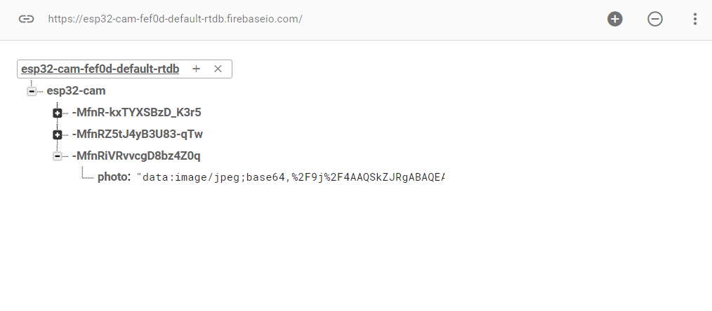

So I tried to set up my little ESP32-CAM. I was told to follow Amy Zhou's documentation but I didn't think I needed it because I thought it went through too many steps because she was building more of a dog treat dispenser too, so I just watched the video that she linked first.
Once I had the initial set up ready with the firebase all set up, I started to run into some issues. I got a random error that I didn't know what to do and I saw in the video that the Firebase library that they were using was an older version of library so I changed it to 3.2.1. However, I started to get another issue where the board would not connect. This was when I was told to short the ISO pin to the GND pin. After that I was able to move on to the serial monitor, I reset the board... and the connected was refused.
I was stuck and didn't know what to do and couldn't find anything online. Then it was suggested to me to go back to Amy's documention and thre it was, the same problem I was having. Her solution was to change a small portion of the code that would allow me to run on the latest version. And what do you know, it worked.
So now whenever you reset the board, it will take a nice picture and upload it to the fire base. It leaves you with a url which you paste into your browser and it should show the image. Pretty neat stuff.
For my final project, I want to try to possible use the smart cube as maybe a lock, so that you can only unlock the box if you solve the cube. The smart cube shows on the serial monitor when the solved state is achieved so I will try it out once I get it later today. Starting from now project updates will be on the final project page on the top.